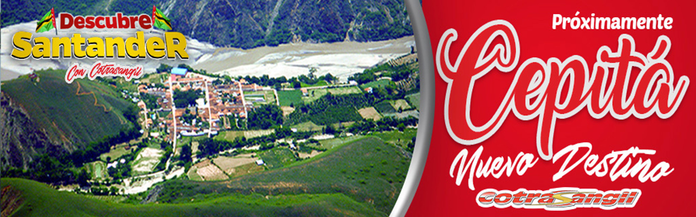

-

- 
-

-

-

Contamos con 55 busetas de servicio intermunicipal en excelentes condiciones todas son de los últimos modelos cumpliendo con las rutas de San Gil – Bucaramanga, San Gil – Socorro, San Gil – Barrancabermeja, San Gil – Aguachica desde las 4:30 a.m. hasta las 8:00 p.m. cada 20 minutos desde el terminal de transporte de San Gil MODULO 1.
Contamos con 27 camionetas, microbuses y buses para la prestación del servicio especial escolar y de turismo a los diferentes destinos del país. Además tenemos paquetes turísticos al parque nacional del chicamocha y convenios con los hoteles de la provincia guanentina.
Contamos con 75 vehículos tipo Microbús, Busetas y Buses para la prestación de este servicio en horarios oportunos y frecuentes para cubrir las rutas desde el Parqueadero Privado “COTRASANGIL” (Cra. 10 Cll 17 Esquina) San Gil a: • Mogotes • Curití • Barichara • Villanueva • Páramo • Ocamonte • Charalá • Valle de San José • Cabrera • Aratoca
Contamos con 42 microbuses urbanas que prestan su servicio realizando 4 recorridos
• San Martín – Centro – Almendros – Cementos
• Villa Olímpica – Centro – Hospital – Fátima
• Libertad – Centro – Cementos - Ragonessi
• Mateguadua – Centro – Fátima – SENA.
Cubriendo en su totalidad la población de San Gil, prestando un servicio ágil y constante desde las 5:30 a.m.
hasta las 10:00 p.m. con una frecuencia de despacho cada 5 minutos
Contamos con dos modernas estaciones, con servicio las 24 horas y personas con la mayor eficacia dónde le ofrecemos EDS COTRASANGIL ubicada frente al parque Gallineral EDS LA NUEVA AVENIDA COTRASANGIL ubicada en la Cra. 12 No.17-01
Contamos con 12 busetas y camionetas que prestan el servicio mixto (Pasajeros y Carga) en las rutas: • San Gil – Granja del Cucharo (Pinchote) • San Gil – Las Vueltas (Curití) • Charalá – Cincelada • Charalá – Riachuelo
Prestamos servico de giros para que puedas realizar las transacciones que dessees en el menor tiempo posible
Ofrecemos el servicio de encomiendas con y sin contraentrega a todos los destinos que cubrimos en forma oportuna y segura en el menor tiempo posible.
Contamos con 128 taxis urbano, en excelentes condiciones,
la gran mayoría son último modelo. Ofrecemos nuestros
servicios a través de la central de radios.
Teléfonos PBX: 7243333, 7241111, 7247000, 3182818213, 3014572317 (WhatsApp), 3112227722